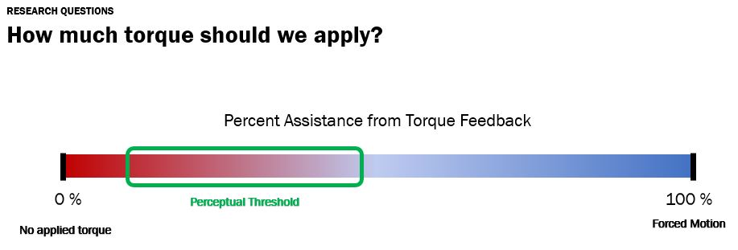

Goal
The test device is designed to operate near the wearer's perceptual threshold with small assistance.
This would maximize the information transfer, as to how much and when to move the body while still allowing as much of freedom in movement as possible.
The two important requirements were:
- Minimal Resistance to Motion
- High Bandwidth

1st Prototype: Cable-driven Mechanism
The prototyping strategy for the first stage was to use the built-in resource to minimize the time to verify the concept.
So we adopted Maxon's built-in actuator assembly with off-the-shelf motor controller unit. Details are followed:
- The key design principle was to minimize the inertia by minimizing the distal mass while delivering the torque thorugh the Bowden cable.
- We achieved closed-loop active compliance using admittance controller with RoboteQ's built-in position controller
- Majority of the design consdierations were to make the torque delivery consistent despite of the complex shape of our body (including the cable tensioner).
This prototype gave us important lessons. Those lessons were obtained from observing limitations of low bandwidth due to elasticity of cable,
backlash due to distance between the two pulleys, and limited access to the internal control loop for mitigating cable friction.
2nd Prototype: Belt-driven Mechanism
The next iteration of prototype reflected the lessons. Now the two gear system is connected with the timing pulley,
with the shorter distance on the rigid platform. The tensioner pulley was introduced to balance the belt sagging and the shaft's friction. Details are followed:
- We switched the MCU to more powerful one.
- The in-runner BLDC was changed to out-runner bancake motor.
- We introduced custom-made hall sensor and kit optical encoder for more compact design.
From this prototype, we learned that having the loadcell for the admittance controller did not provide high
backdriveability we want. Thus, we replaced the admittance controller that requires both force sensor and position sensor into a simpler controller with only the position sensor.
Most importantly, we learned how to run and customize Brushless DC motor from this experience.
3rd Prototype: Direct-drive Mechanism
As we chose direct-drive mechanism for the final prototyping stage, we needed another way to size the actuator,
other than inverse kinematics. So we ran pilot test and found peceptual torque to be ~0.5Nm. Thus, a large out-runner BLDC motor was selected. Details are followed:
- For the heat problem, we tested the motor for several stall condition and decided to attach mini fans.
- Instead of using default TI Motorware Library's feature, we implemented optical index encoder for detecting the motor's electrical position.
- To make the actuator more transparent, we handled the torque ripple problem by applying inverse PWM waves.